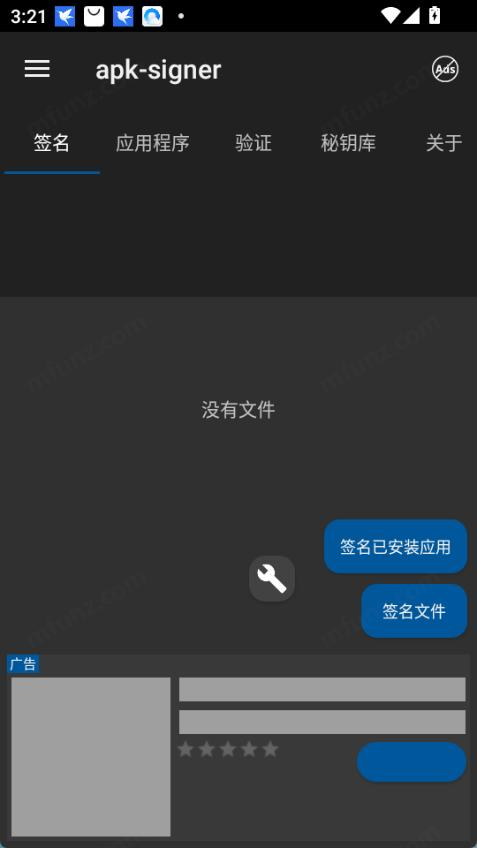
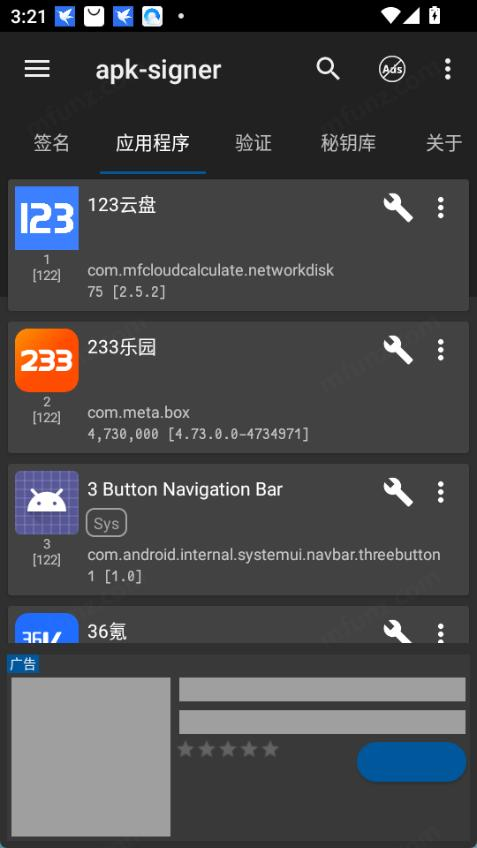
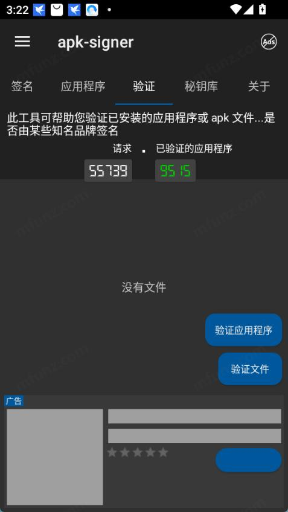
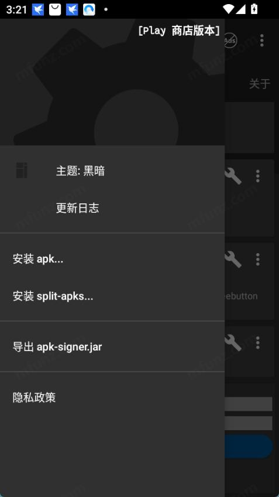

Apksigner 上手：小白也能在手机上给 APK 签名的五分钟教程
第一次接触 APK 签名？完全不懂也没关系。这篇带你从零开始，用 Apksigner 在手机上跑通一次完整签名流程，顺手解决最常见的三个疑问。
这篇能带你从完全不懂 APK 签名到用 Apksigner 跑通第一次签名，不需要任何基础。
它到底是干嘛的——一个生活化类比
想象你寄快递，包裹上要贴一张"发货地址和签名"的标签，快递公司收到后核对签名，确认包裹没被中途拆过换过。Apksigner 就是这个"贴标签 + 核对标签"的工具，只不过它处理的不是实体包裹，而是安卓应用的 APK 文件。
安卓系统在安装任何应用前都会检查这张"电子签名标签"——签名有效、和原厂一致，才允许安装。那些"应用未安装""解析包错误"里，有不少就是签名对不上导致的。Apksigner 把这套原本只能在电脑上、需要敲命令行的事，搬到了手机界面上，点几下就能完成。
作为在安卓圈子里口碑不错的签名工具，更详细的功能介绍和版本对照都在 Apksigner 官网上。
五分钟上手：从下载安装到第一次跑通
第一步：拿到安装包
先去下载。你可以在应用商店搜它的包名 com.haibison.apksigner，或者直接从 官方下载 拿网盘版。我个人倾向网盘版——固定版本，不会偷偷自动更新导致行为变了都不知道，而且能核对版本真伪。
拿到安装包后安装好，打开应用。你会看到底部三个标签页：应用程序、签名、验证。先别慌，我们只用到中间那个"签名"。

第二步：准备密钥库
签名需要一把"电子印章"——就是密钥库文件（keystore）。这是你唯一需要提前准备的东西：
- 如果你之前在电脑上用 Java 的
keytool生成过，好消息，免费版就能直接导入。 - 如果没有，免费版不能在手机上从零生成密钥库，得用电脑工具先生成一个再导进来。别担心，电脑上生成一次就够了，以后一直用这一个。
导入路径也简单：在签名页点"选择密钥库文件"，找到你存的 .jks 或 .keystore 文件，输入密码就行。
第三步：选 APK 并签名
密钥库就位后，点"选择 APK 文件"——可以从文件管理器里挑，也可以用应用列表里已经安装的应用直接签。选好后页面上会显示 APK 的包名、版本号，再点"签名"按钮，等几秒。

签名成功会弹一个"签名完成"的提示，输出 APK 默认加了 -signed 后缀，和原文件放同一目录。搞定——这就是你签的第一个包了。
上手后先玩这三个功能
签完第一个包别急着关掉，花十分钟把下面三个功能摸一遍，它们覆盖了新手最常碰到的场景。
功能一：验证已安装应用的签名
手机上装了一堆从论坛、网盘、群里找来的应用？这个功能帮你快速过一遍它们有没有被人调包。
切到底部验证标签页，悬浮按钮展开选"验证应用程序"，在列表里挑可疑的那些。结果会告诉你：签名有效且匹配原厂 → 放心用；签名对不上原厂 → 大概率是重打包的；验证报错 → 包本身有问题。

你会发现来路不太正的应用，签名真的对不上——这个功能比杀毒软件还好用，因为改签名是重打包的必经步骤，一查一个准。重打包的常见特征和验证结果的完整判读，Apksigner 文档里整理了一页对照表。
功能二：换签名重签
有时候你拿到一个别人签过名的 APK，想用自己的密钥库重新签。Apksigner 在签名页面有个"删除原始签名"的开关，勾上再点签名，就会把原签名清掉后用你的密钥库重签。
这个功能对二次开发、测试分发特别方便——团队里每个人都用自己的密钥库签自己的测试包，出问题了一眼就能追溯到是谁签的。
功能三：Key Sender 免手输密码
如果你签名频率高（一天好几次甚至批量签），每次输入密钥库长密码是真的烦。而且在公共场合手输密码有被瞟到的风险。
开发者给 Apksigner 配了一个同门小工具叫 Key Sender，密码在两个应用之间直接传值，不用经过键盘手打。密码长度再长、有再多特殊字符都不怕输错，而且传值过程屏幕上不显示明文。签名频率低的话可以先不装，但如果你日常要批量重签，这个效率件用了你就回不去了。
小白的三个常见疑问
Q1：免费版够用吗？要不要买 Pro？
签名和验证全免费，足够覆盖日常使用。免费版唯一的两个限制是：不能在手机上新建密钥库（得用电脑先生成），以及主题不能切换。判断要不要付费的标准只有一个——你是否需要在手机上从零造一个密钥库。不需要的话，免费版完全够用。
Q2：签完名还是装不上，怎么回事？
最常见的原因有三个：密钥库密码输错了但还签成功了（签名损坏）、手机上已经装了同包名但不同签名的旧应用（先卸载旧的再装）、或者 APK 本身有问题。先用 Apksigner 的验证功能验一下签好的包，验证通过再装基本就不会有问题了。
Q3：密钥库丢了怎么办？
这是最痛的坑——密钥库一旦丢了，以后同一个包名的应用就再也没法更新安装了，只能改包名。所以一定要备份：把密钥库文件复制到多个安全的地方（网盘、U盘、电脑硬盘至少三份），密码单独记在密码管理器里，不要和密钥库文件放一起。开发者在抽屉菜单里提供了"导出密钥库备份"功能，定期点一下就行。

写在最后
恭喜你——到这里你已经在手机上完成了一次完整的 APK 签名流程，也掌握了两个最实用的辅助功能。进阶方向的话，文档站里还有版本 7.3.10 的档案数据核对、v2/v3/v4 签名方案的区别，以及更多场景化的实战案例。
相关资料我同步到了三个仓库，方便不同偏好的读者查阅：主库放在 GitHub，镜像在 Gitee，同步一份在 GitCode。签名这件事，对新手来说门槛真的不高——动手跑一次，剩下的就是熟能生巧了。